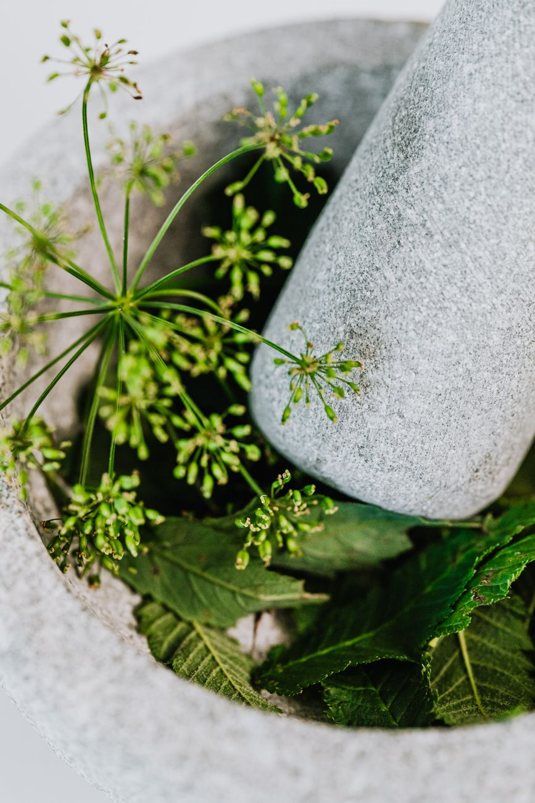

Our Philosophy
The quiet ideas that shape how we think, create and care at Navya Ayurveda.
Wellness is not a destination. It is a daily rhythm of small, kind choices.
The Navya Ayurveda wayOur philosophy comes from the Ayurvedic view that body, mind and nature are connected. We do not chase quick fixes or loud promises. We prefer gentle habits, honest information and deep respect for the plants and traditions we learn from.
What we believe in

Balance
Ayurveda sees good health as a steady balance rather than an extreme. Too much of anything, whether work, rest, spice or screen time, can tip the scale. We look for the middle path.
- Choose moderation over perfection
- Notice how your body feels each day
- Make small adjustments, not big overhauls

Nature first
Plants, herbs, oils and spices have guided Indian homes for generations. We start with nature and with respect: respect for the source, for the people who grow it and for the knowledge that came before us.
- Simple, natural ingredients
- Gratitude for traditional knowledge
- Care for the land and its seasons

The whole person
You are more than one symptom or one routine. Body, mind and emotions are connected, so we think about the whole picture: how you eat, move, rest, feel and connect with others.
- Look at lifestyle, not only one concern
- Care for feelings as well as the body
- Honour that every person is different
A gentle daily rhythm
Lasting wellbeing is built in the quiet moments: a calm morning, an unhurried meal, a walk at dusk, an early night. Repeated gently, these habits matter more than any single big effort.
- Follow the rhythm of the day and seasons
- Keep routines kind and flexible
- Celebrate small, steady progress
How this philosophy shows up in our work
Honest words
No exaggerated claims, no false promises. We say only what we can stand behind.
Respect for tradition
We credit the knowledge we learn from and share it with humility.
A gentle approach
Calm language, simple ideas and no pressure, ever.
Professional care matters
We encourage you to speak to qualified experts for any health concern.
Care for the planet
We favour natural, thoughtful choices that respect the earth.
Warm human care
Every message and every visitor is treated with kindness and attention.
Three simple steps to start
Listen
Pause and notice how you feel through the day: your energy, sleep, mood and appetite.
Learn
Read about Ayurveda from trusted sources and talk to qualified professionals.
Live gently
Try one small change at a time and let it settle before adding another.

Explore Ayurvedic wellness
See the elements, doshas and daily rhythm that inspire everything we share.